我們把一鍋老滷的功夫留在廚房裡，滷好、分裝、急速冷凍。回到家，不用退冰，微波 2 分鐘就是那一口味道。追劇、宵夜、配一杯酒都剛好。
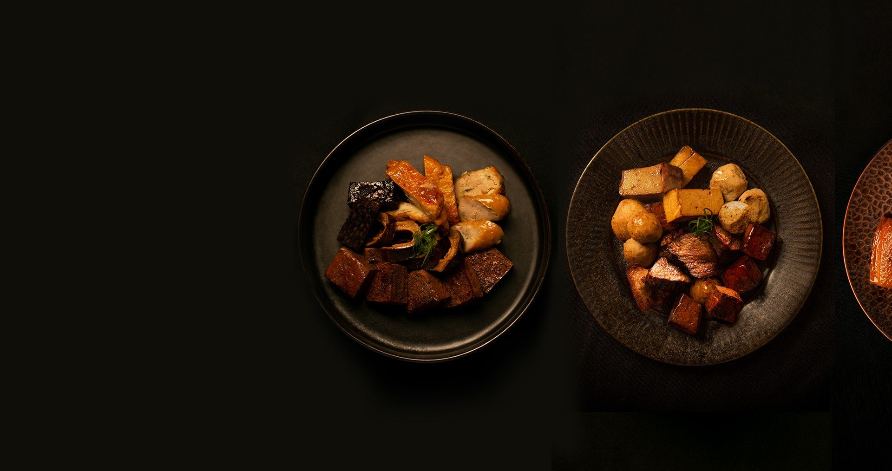
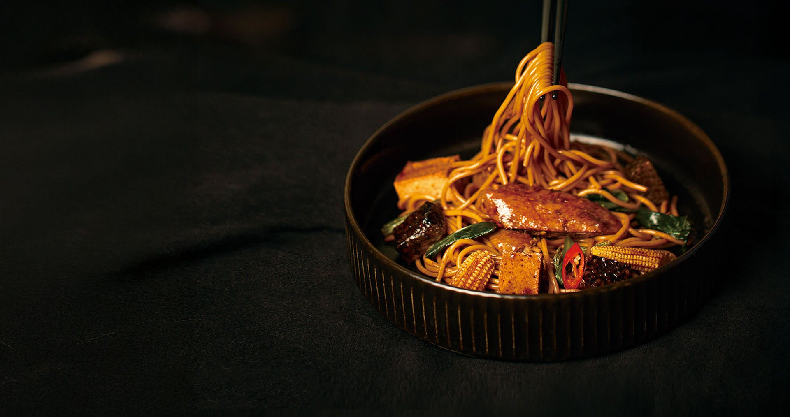
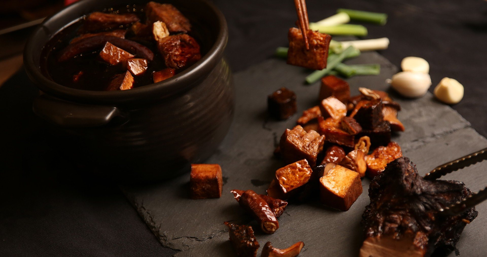
百種辛香料，一鍋慢滷
八角、桂皮、甘草、花椒、陳皮、草果⋯⋯每一味先分開處理，再依比例下鍋，小火慢滷，讓香氣一層一層疊進食材裡。
好的滷味要時間，我們替你把時間花完了。
— Tasty One Hundred
每一包都已經滷好、配好份量。從 2–3 人份的拼盤，到一個人剛好的小簡餐。
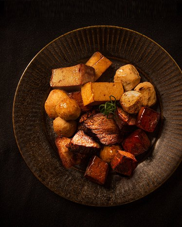
一包五種料，每一樣都吸飽了滷汁。朋友來家裡喝一杯最剛好。
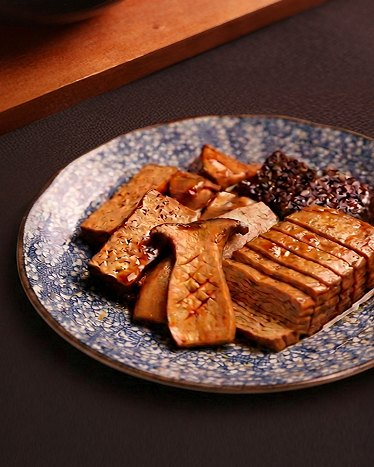
四樣最經典的滷味一次到齊，配一杯啤酒剛剛好。
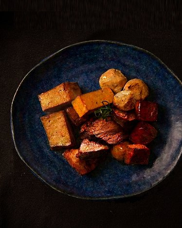
豚金滷的一人份，加班回家、深夜嘴饞，熱一包就有。
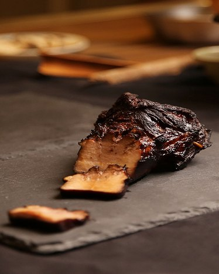
豬頰肉厚切滷透、已經切好片，紅酒啤酒都搭。
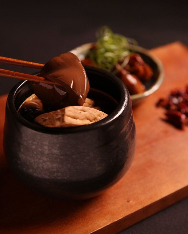
鴨血滑嫩、豆腐吸飽湯汁，天冷最暖胃。
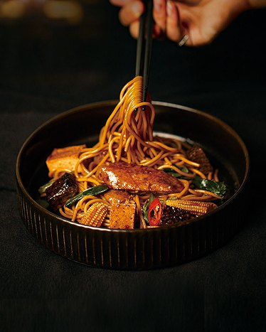
豬頰肉、雞翅雙主菜，一碗就吃得豐盛。
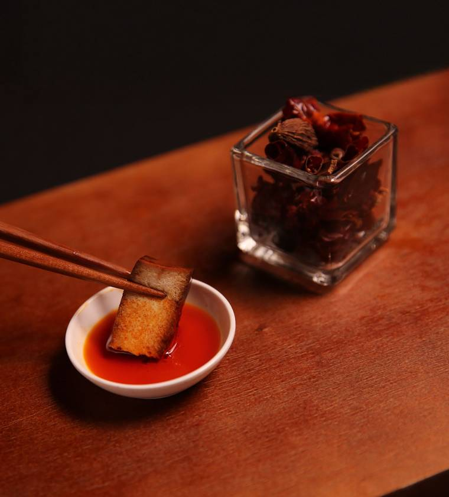
入口先是香，辣只在後頭輕輕帶過。
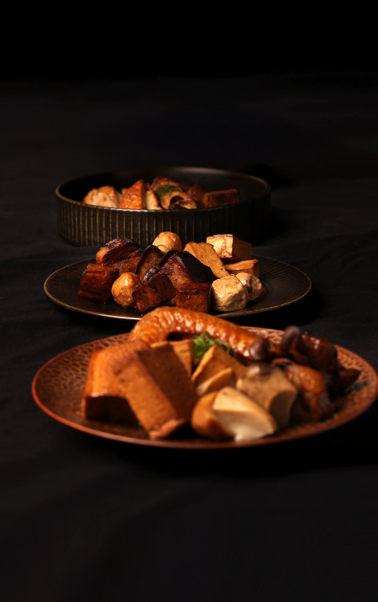
未拆封 -18°C 以下，滷味類可以保存 1 年，想吃再拿。
從冷凍庫拿出來不用退冰，也不用拆封，整包直接加熱就好。用微波爐的話，700W 先熱 1 分 30 秒，確認溫度後再熱 30 秒到 1 分鐘，大約 2 分鐘就上桌；也可以等水滾後整包放進鍋裡，隔水煮 5 分鐘，讓滷汁慢慢熱透。熱好後剪開袋口，小心熱氣。
撒點蔥花薑絲，淋上百味辣油，就是一盤熱騰騰的下酒菜。
出餐前確認所有內容物都熱透。鴨血豆腐只能隔水加熱；百味拌麵的加熱方式不一樣，請看商品頁。
選好品項，到離你最近的 7-11 取貨，全程冷凍配送。
已經有超過 30 間酒吧、餐酒館和 KTV 把百味放上菜單。批發、客製品項或企業團購，歡迎加 LINE 和我們聊聊。